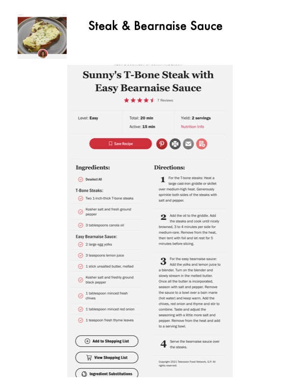

Steak & Bearnaise Sauce

Original cookbook page 401
Ingredients
- Deselect all
- T-Bone Steaks:
- Wo 1-inch-thick T-bone steaks
- @ Kesher salt and fresh ground
- pepper
- Q tablespoons canola oil
- Easy Bearnaise Sauce:
- large egg yolks
- 3teaspoons lemon juice
- 1 stick unsalted butter, melted
- ° Kosher salt and freshly ground
- black pepper
- @ Litsblespoon minced fresh
- chives
- 1 tablespoon minced red onion
- 1 teaspoon fresh thyme leaves
- @ Add to Shopping List
- BH View Shopping List
Instructions
- For the T-bone steaks: Heat a large cast-iron griddle or skillet over medium-high heat. Generously sprinkle both sides of the steaks with salt and pepper. Add the oil to the griddle. Add the steaks and cook until nicel browned, 3 to 4 minutes per side for medium-rare. Remove from the heat, then tent with foil and let rest for 5 minutes before slicing, For the easy bearnaise sauce: Add the yolks and lemon juice t a blender. Turn on the blender and slowly stream in the melted butter. Once all the butter is incorporated, season with salt and pepper. Remove the sauce to a bowl over a bain marie (hot water) and keep warm, Add the chives, red onion and thyme and stir t combine. Taste and adjust the seasoning with a little more salt and pepper. Remove from the heat and ad
Recipe #401 from collection